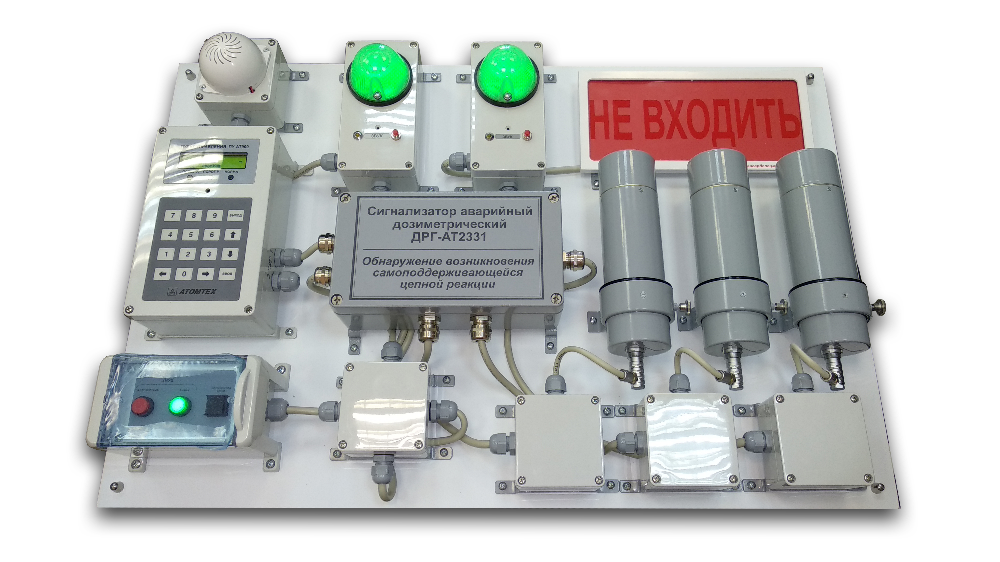
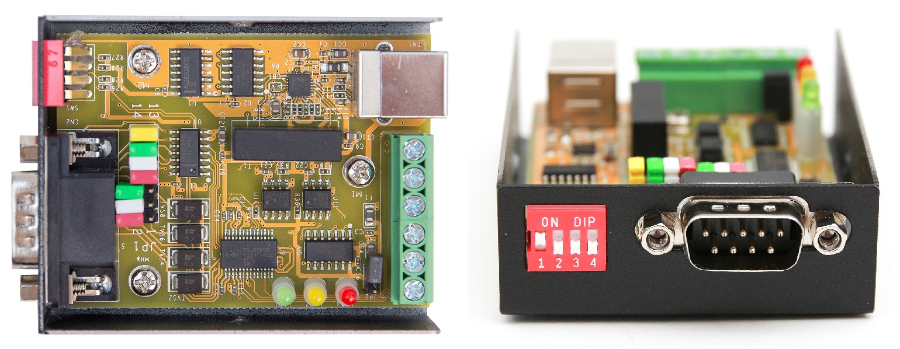
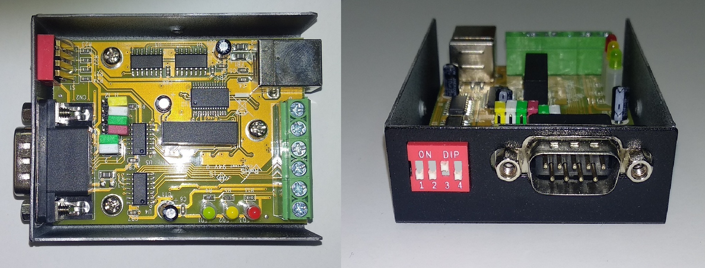
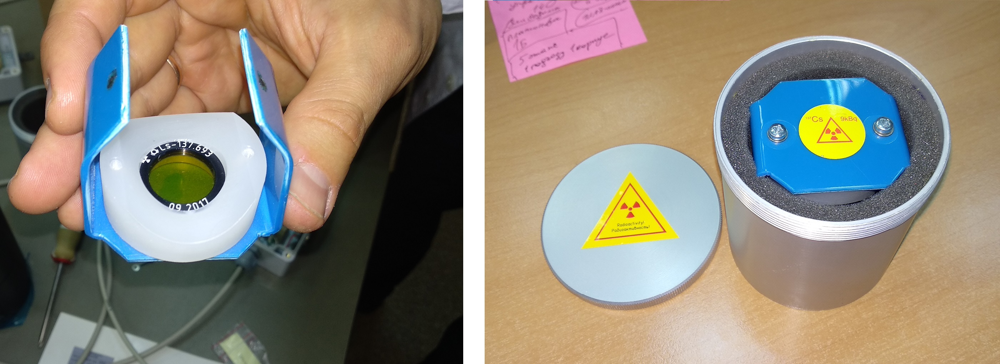
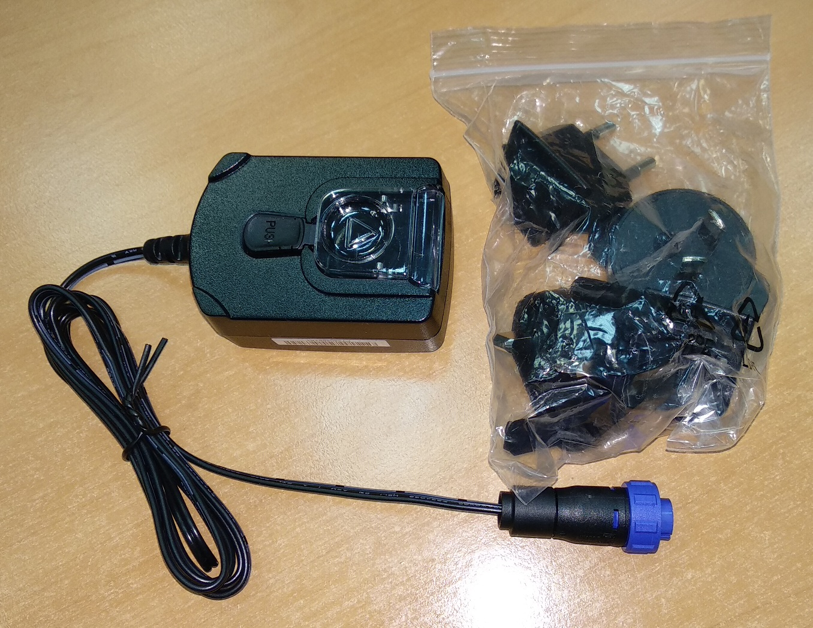

СРК-АТ2327.
Система радиационного контроля

941-й адаптер интерфейсный
942-й адаптер интерфейсный
943-й адаптер интерфейсный
Блок регистрации
ПУ АТ-900
МРП. Пешеходный монитор
Портальный монитор
SARK2 и МРП
СРК портальный монитор
СРК портальный монитор 2
Степень защиты для СРК
СРК табло алгоритм работы
Шаблон листа заказов
Выходной контроль СРК
AT2327 РЭ 2016
ЗАКАЗАТЬ
942-й адаптер интерфейсный
943-й адаптер интерфейсный
Блок регистрации
ПУ АТ-900
МРП. Пешеходный монитор
Портальный монитор
SARK2 и МРП
СРК портальный монитор
СРК портальный монитор 2
Степень защиты для СРК
СРК табло алгоритм работы
Шаблон листа заказов
Выходной контроль СРК
AT2327 РЭ 2016
ЗАКАЗАТЬ
Настройка USB-COM адаптера:
Это старая версия адаптера: 
Так настраивается "синий" адаптер:

Настройка Ethernet адаптера NPort:
Настраивается по инструкции. В пункте 3.3 выбрать RS-485, 2 wire. Чуть что, пароль — moxa
Кабель для Устройства Сигнализации:
Вот так укладывается контрольный источник:
 Сам источник заказывать у Антона ЖуковскогоКакие бывают кабели для блоков:
- DB9 для USB-COM — 685621.129 — 1,5 м
- DB9 для Ethernet — 685621.129-01 — 1,5 м
- DB9 для маленького табло (ТЭИ) — 315 — 0,5 м
- ODU прямой (Большой) для БДКГ-204 — 318 — 0,5 м
- ODU угловой (Большой) для БДКГ-24 — 318 — 0,5 м
- ТО-7 для БД — 025 — 0,5 м
- ODU (Маленький) для БД — 409 — 0,5 м
- ТО-5 для БД — 109 — 0,5 м
{kind=link}
{kind=link}
{kind=link}
На 318-ый кабель заказать:
- (угловая) Вилка кабельная W11K0C-P07MFD0-6000
- (прямая) Вилка кабельная S21K0C-P07MFD0-6000 + черная резиновая втулочка
Адаптер питания для ПУ-АТ900 (список деталей):
- Адаптер сетевой PSC12R-120
- Розетка PX0410/04S/4550
- Контакты SA3347/1 (2шт)
Получить на складе и отдать на монтаж
Как самому сделать адаптер
Названия деталей (мониторить остаток на складе!)
- Аккумулятор LC-P 127 R2P 12V
- Оповещатель пожарный "АСТО 12/1" (НЕ ВХОДИТЬ)
- Табло (маленькое) СКНЕ 467814.040